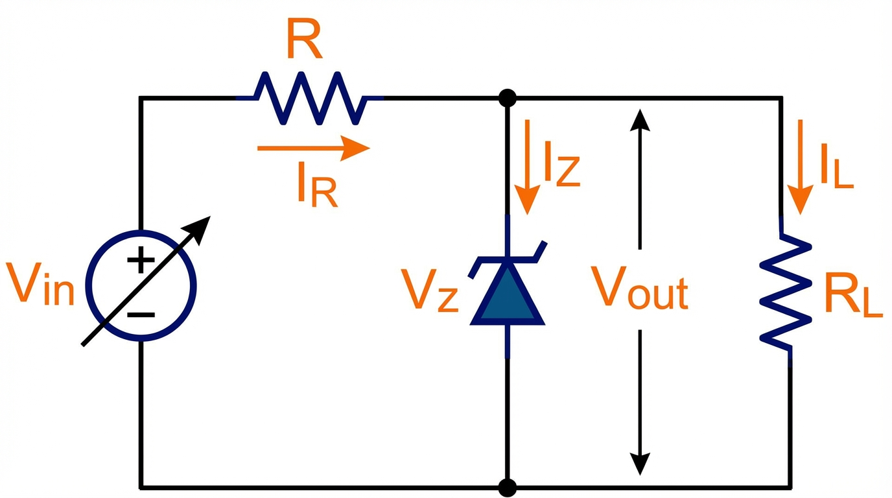

Design e Análise

O resistor série R absorve a diferença de tensão entre a entrada (Vin) e a saída (Vz), limitando a corrente total.
O Diodo Zener em paralelo com a carga ajusta sua corrente (Iz) para manter Vout ≈ Vz constante, compensando variações de Vin ou da corrente de carga (IL).
Definir Parâmetros Iniciais
Conheça a tensão desejada (Vz), a variação da entrada (Vin_min/max) e da carga (IL_min/max).
Corrente Mínima do Zener (Iz_min)
Geralmente 10% da Iz_max ou valor de teste (Izt).
Cálculo do Resistor Série (R)
Deve garantir Vz mesmo no pior caso (Vin_min e carga máxima).
Verificação de Potência (Pz_max)
Pior caso: Vin_max e carga desconectada (IL=0).
Potência do Resistor (PR)
Eletrônica Analógica - Projetos Básicos
Slide 08/13